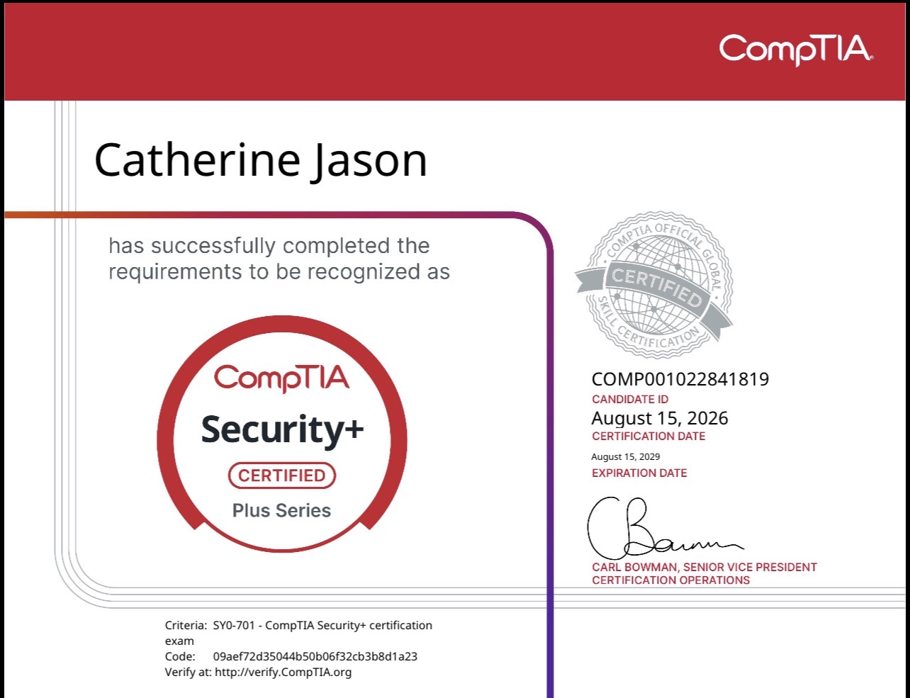

Certification Details
Verify at verify.CompTIA.orgCertificate

Need a closer look? Open the certificate imageAbout CompTIA Security+
Working through Security+ helped me strengthen my understanding of the security fundamentals that support both IT and cybersecurity work. It gave me a clearer view of how to think through risk, protect systems, and approach common security challenges in a practical way.
I learned more about threat identification, vulnerabilities, access control, incident response, and how security fits into day-to-day operations. The material also helped me connect classroom knowledge with the kinds of situations I may run into in real environments.
Earning this certification reflects the time I put into building a stronger foundation in cybersecurity and gaining confidence in the core concepts I will continue using as I grow in this field.
Key Domains Covered
- General Security Concepts
- Threats, Vulnerabilities & Mitigations
- Security Architecture
- Security Operations
- Security Program Management & Oversight
- Cryptography & PKI
- Identity & Access Management
- Incident Response Lifecycle